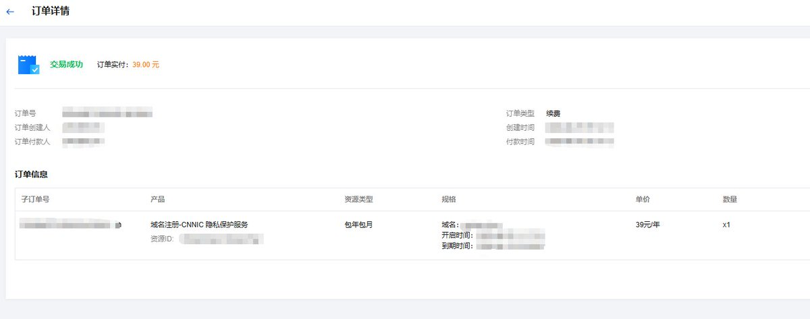

奶昔🥤
@realNyarime
@hanawa_hinata @tangeorange 不喜欢CNNIC，之前找APNIC下CN的IP，结果工信部就立刻发函过来要求公司对IP资源实名制。。。傻逼来的

日向花和 Hanawa Hinata
@hanawa_hinata
@tangeorange 就 CNNIC 那死样，但凡了解一下的人都喜欢不了一点。
.cn 域名注册局强制要求实名制，即使你不备案，注册时也会强制要求使用验证过的实名信息模板。
在之前，因为 whois 包含个人信息，因此域名服务商一般会有 whois 保护这种服务。后来 ICANN 要求 whois 默认不展示个人信息，whois https://t.co/PeKvBGFCNj